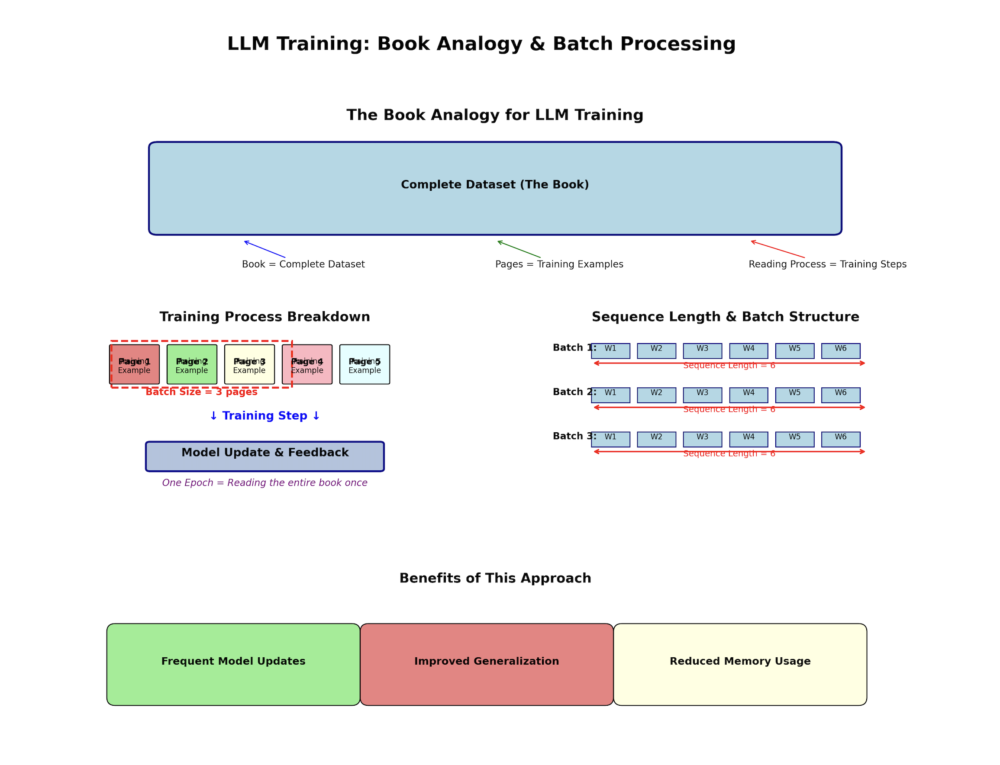
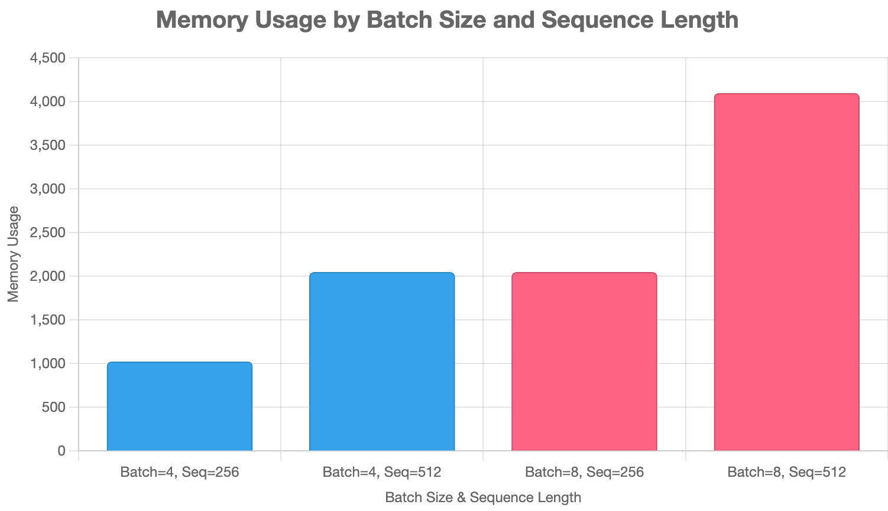

10. Advanced LLM Training
üìå Quick Navigation
- Understanding Practical Limitations
- Boosting Efficiency: PeFT and LoRA in Depth
- Managing Data Memory: Batch Size & Sequence Length
- Advanced Solutions: Gradient Accumulation & Checkpointing
- Fitting Giants: Practical Introduction to LoRA for Large Models
- Expanding LoRA: Adapter Merging and Effective Evaluations
Understanding Practical Limitations
- Overview
- Training Challenges with Large Models
- Memory Constraints & Optimization
- Advanced Configuration Example
- Smarter Training with LoRA
- References & Further Reading
Overview
This section builds upon the previous lessons by transitioning from small-scale LLMs to working with larger models like Meta’s LLaMA 3.1 8B. The focus is on highlighting practical limitations and advanced optimization techniques to train large models with limited hardware resources.
üëâ This tutorial used the unsloth/Meta-Llama-3.1-8B-Instruct base model and a custom storytelling dataset.
Training Challenges with Large Models
Goals:
- Scale from small to 8B+ parameter models
- Use real-world model:
LLaMA 3.1 - Sloth Variant
Observations:
- Running on consumer-grade GPU (e.g., 24GB) fails due to:
- Tokenizer misconfiguration
-
Out-of-memory errors even at minimal batch sizes
-
Reducing batch size & sequence length:
- ✅ Enables training
- ❌ Hurts final performance
Memory Constraints & Optimization
Issues:
- Model weights, optimizer, and dataset compete for memory
- Even smallest 8B variant cannot fit fully
Solutions Explored:
- Minimal batch size = 1
- Sequence length halved
- Still fails on common GPUs
Suggested Direction:
- Use smarter techniques:
- üü¢ LoRA (Low-Rank Adaptation)
- üü¢ Gradient Checkpointing
- üü¢ Mixed Precision (bf16/8bit)
Advanced Configuration Example
# Source: advanced_train.yml
base_model: unsloth/Meta-Llama-3.1-8B-Instruct
datasets:
- path: jaydenccc/AI_Storyteller_Dataset
type:
system_prompt: "You are an amazing storyteller. From the following synopsis, create an engaging story."
field_instruction: synopsis
field_output: short_story
output_dir: ./models/Llama3_Storyteller2
sequence_length: 1024
micro_batch_size: 4
optimizer: adamw_bnb_8bit
learning_rate: 0.0002
adapter: lora
lora_r: 32
lora_alpha: 16
lora_dropout: 0.05
gradient_checkpointing: true
üëâ Open in Colab

Smarter Training with LoRA
LoRA is introduced as a lightweight fine-tuning mechanism.
Benefits:
- Reduces GPU memory footprint
- Only updates a few trainable parameters
- Compatible with large models like LLaMA
Combined With:
- bf16 or tf32 mixed precision
- Gradient Checkpointing
- 8bit optimizer (bnb)
References & Further Reading
- Meta LLaMA 3.1 on Hugging Face
- LoRA: Low-Rank Adaptation of Large Language Models (ArXiv)
- Hugging Face Transformers Docs
- Jay Alammar's Blog: The Illustrated Transformer
- Google Colab Guide
- OpenAI Cookbook
- NVIDIA: Memory-Efficient Training
Boosting Efficiency: PeFT and LoRA in Depth
üìå Quick Navigation
- Overview: The Problem with Full Fine-Tuning
- Memory Usage Breakdown
- Introduction to Parameter-Efficient Fine-Tuning
- LoRA: Low-Rank Adaptation Explained
- Hyperparameters in LoRA
- Benefits and Applications
- References & Further Reading
Overview: The Problem with Full Fine-Tuning
Fine-tuning large language models (LLMs) often exceeds hardware capabilities due to massive memory demands. The key goals of improving training efficiency are:
- üü¢ Lower memory requirements.
- üü¢ Maintain model performance and accuracy.
- üü¢ Democratize access to LLM customization on limited hardware.
Full fine-tuning is resource-intensive due to the need to update all model parameters, gradients, and optimizer states for every step.
Memory Usage Breakdown
Training large models consumes memory across four key areas:
| Component | Description | Memory Usage |
|---|---|---|
| Model Parameters | Learned weights of the model | 2 × N GB (for N billion params @ FP16) |
| Gradients | Gradients for backpropagation | 2 × N GB |
| Optimizer States | Additional states like moment estimates in Adam | ~4–8 × N GB |
| Training Data | Input sequences + embeddings per batch | Variable (based on batch/seq length) |
➡️ Total: 8–12× the model parameter memory.
Introduction to Parameter-Efficient Fine-Tuning
Rather than updating all parameters, Parameter-Efficient Fine-Tuning (PEFT) updates only a targeted subset of the model. This reduces resource requirements while maintaining task-specific performance.
One of the most prominent PEFT techniques is:
- üîµ LoRA (Low-Rank Adaptation) ‚Äî inserts trainable, low-rank matrices into layers of a frozen pre-trained model.
LoRA: Low-Rank Adaptation Explained
LoRA modifies only a small number of parameters by introducing additional matrices into each layer of the frozen model.
üéØ Key Concepts
- Fine-tunes LLMs by updating low-rank matrices (
AandB) instead of full weight matricesW. - Adds
ΔW = A × BtoWduring forward pass. - Enables efficient updates and reduces memory overhead.
ü߆ LoRA - Parameter and its usage
| Parameter | Description | Influence on Memory | Influence on Runtime |
|---|---|---|---|
| r (rank) | The rank of the LoRA matrices. Lower values reduce memory and computation cost. | ✅ Lower rank = less memory usage | ✅ Lower rank = faster computation |
| alpha | Scaling factor applied to the LoRA output. Usually alpha / r is the effective scale. | üîÅ No direct memory impact, but may influence scale of activations | ➖ May affect gradient scale, but not runtime |
| dropout | Dropout probability applied to the LoRA layers to regularize during training. | ➖ Slight additional memory usage due to dropout mask | ➖ Slight slowdown during training |
| bias | Whether to include bias terms. Can be 'none', 'all', or 'lora_only'. | ➖ Adds small amount of memory if bias is included | ➖ Minor impact if biases are added |
| target_modules | List of module names where LoRA adapters should be inserted (e.g., 'q_proj', 'v_proj'). | ✅ Selective targeting reduces memory footprint | ✅ Reduces compute by targeting specific layers |
| merge_weights | If True, merges LoRA weights with the original model weights during inference. | ✅ Merging removes need for separate LoRA weights at inference | ✅ Faster inference by removing adapter layers |
üîó Hugging Face + ArXiv
Hyperparameters in LoRA
| Hyperparameter | Role | Typical Value(s) |
|---|---|---|
rank (r) |
Size of the low-rank matrices | 8, 16, 32 |
alpha |
Scaling factor for ΔW = α × A × B | 16 (default) |
dropout |
Regularization to prevent overfitting | 0.0 – 0.1 |
target_modules |
Model layers to apply LoRA (e.g., query, value, etc.) |
Varies |
üìå Higher
rankmeans better task adaptation, but at a cost to memory savings. üìå Lowerrankhelps prevent catastrophic forgetting during fine-tuning.
Benefits and Applications
üü¢ Advantages of LoRA
- Reduces GPU memory footprint by >80%
- Avoids catastrophic forgetting
- Accelerates training time
- Easily pluggable into existing transformer architectures
- Works well on small datasets
üõ†Ô∏è Example Use Cases
- Personalizing a chatbot without retraining a full LLM
- Domain-specific adaptation (e.g., legal, healthcare)
- Multilingual extensions using LoRA adapters per language
References & Further Reading
- LoRA: Low-Rank Adaptation of Large Language Models (ArXiv)
- Hugging Face PEFT Documentation
- Jay Alammar – LoRA Illustrated
- NVIDIA – Efficient Fine-Tuning Techniques
- Google – Parameter-Efficient Transfer Learning
- Meta AI Research – PEFT Methods
- OpenAI – Scaling Laws and Efficient Training
- Microsoft – LoRA Integration in DeepSpeed
Managing Data Memory: Batch Size & Sequence Length
üìå Quick Navigation
- Introduction to Memory Efficiency
- Training Analogy: Book, Pages, and Feedback
- Core Training Parameters
- Batch Size
- Sequence Length
- Trade-offs in Training Efficiency
- References & Further Reading
Introduction to Memory Efficiency
In the previous lesson, we explored LoRA (Low-Rank Adaptation) as a method to reduce memory usage during fine-tuning of Large Language Models (LLMs) by modifying only a subset of model parameters.
In this session, we shift our focus to the memory consumption from data—specifically, how the structure of the input data (e.g., batch size and sequence length) affects training efficiency, cost, and feasibility.
Training Analogy: Book, Pages, and Feedback
To illustrate how models learn from data, the lesson uses an analogy:
- Book → The complete dataset
- Page → A single training example
- Reading a few pages then testing → A training step
- Reading the full book once → One epoch
- Number of pages per step → Batch size
- Words per page → Sequence length
 
This incremental reading process enables: - Frequent model updates - Improved generalization - Reduced memory usage per training step
Core Training Parameters
Batch Size
- Determines how many training examples are processed before a model update.
- Larger batches:
- Require more memory
- Yield more accurate gradients (faster convergence)
- Are often limited by GPU/TPU capacity
- Smaller batches:
- Reduce memory consumption
- Introduce noisier gradients, which may help generalization
Sequence Length
- Number of tokens per training example.
- Longer sequences:
- Require more memory and compute
- Contain richer contextual information
- Shorter sequences:
- Allow for bigger batch sizes
- Reduce computation time
- May lack enough context for learning
üìâ Trade-off: You often reduce batch size to accommodate longer sequences within memory limits.
Trade-offs in Training Efficiency
When training LLMs, we often cannot afford large batch sizes due to memory limits.
- Rarely does batch size get “too large”
- Commonly, batch size becomes “too small” due to memory constraints
- The key challenge:
How to gain the benefits of large batch training without overwhelming memory resources?
Solutions to these constraints will be covered in the next lesson.
References & Further Reading
- LoRA: Low-Rank Adaptation of Large Language Models (arXiv)
- Jay Alammar – Illustrated Transformer
- Hugging Face – Transformers Documentation
- OpenAI Blog
- Google Research
- Microsoft Research – DeepSpeed
- NVIDIA Developer Blog
- Facebook AI Research (FAIR)
➡️ Back to Top
Advanced Solutions: Gradient Accumulation & Checkpointing
üìå Quick Navigation
- Micro-Batching and Gradient Accumulation
- Gradient Checkpointing
- Efficiency Method Comparison Table
- References & Further Reading
Micro-Batching and Gradient Accumulation
Training large language models (LLMs) often requires careful memory management. Two primary techniques help in this regard: Micro-batching and Gradient Accumulation.
Micro-Batching
- A large batch is split into micro-batches to fit in limited memory.
- Each micro-batch is processed sequentially.
- Gradients are accumulated to simulate a larger batch.
- Enables efficient training on hardware with limited GPU memory.
Effective Batch Size Formula:
Effective Batch Size = Micro Batch Size × Gradient Accumulation Steps × Number of GPUs
üñºÔ∏è 
Alt text: Diagram showing micro-batch pages filling a book one by one, representing how gradient accumulation simulates a large batch.
Gradient Accumulation
- Performs multiple forward/backward passes per optimization step.
- Gradients are aggregated before updating the model.
- Reduces memory usage but increases training time.
üîß Tip: Choose the largest micro-batch size that fits your GPU and increase accumulation steps only when necessary.
üìâ Example:
| Micro Batch Size | Accumulation Steps | GPUs | Effective Batch Size |
|---|---|---|---|
| 4 | 2 | 1 | 8 |
| 1 | 16 | 4 | 64 |
Gradient Checkpointing
The Problem
- Training LLMs requires storing many activations during the forward pass.
- These activations are needed for computing gradients in the backward pass.
- Storing all of them consumes significant GPU memory.
The Solution: Checkpointing
- Gradient Checkpointing stores only selected activations during forward pass.
- During backward pass, missing activations are recomputed.
- Balances memory savings with added computation.
üñºÔ∏è 
Alt text: Diagram showing checkpoint blocks within the model to reduce activation memory.
üìä Benefits: - Substantial memory savings - Trade-off: Slight increase in training time
Efficiency Method Comparison Table
| Method | Memory Usage | Training Speed | Accuracy Impact | Notes |
|---|---|---|---|---|
| üü¢ LoRA | High savings | Moderate | Neutral to Slight loss | Trains subset of weights |
| üîµ Small Batch Size | Medium | Faster (large batch) | Neutral | Limited if model needs larger batches |
| üîµ Gradient Accumulation | High savings | Slower | Slightly Better | Allows larger effective batch |
| üü¢ Gradient Checkpointing | High savings | Slower | Neutral | Strategic activation savings |
| üî¥ Mixed Precision | Very High | Faster (with FP16) | Slight loss | Risk of instability at low precision |
References & Further Reading
- Attention is All You Need – Vaswani et al. (ArXiv)
- Hugging Face Transformers Documentation
- Jay Alammar’s Illustrated Transformer
- NVIDIA – Gradient Accumulation & Mixed Precision
- OpenAI Research Papers
- Microsoft DeepSpeed Memory Optimization
- Google AI Blog: Efficient Training Techniques
- Facebook AI Gradient Checkpointing
➡️ Back to Top
Fitting Giants: Practical Introduction to LoRA for Large Models
üìå Quick Navigation
- Micro-Batching & Gradient Accumulation
- Gradient Checkpointing
- LoRA (Low-Rank Adaptation)
- Batch Size Trade-offs
- Mixed Precision Training
- Technique Comparison Summary
- References & Further Reading
Micro-Batching & Gradient Accumulation
Micro-batching enables large batch benefits on memory-constrained hardware. By splitting a large batch into smaller "micro-batches", the system accumulates gradients across them before a single optimizer update.
üîÅ Gradient Accumulation
- Forward and backward passes are done over smaller micro-batches.
- Gradients are accumulated in memory across steps.
- A single optimizer update is performed after N steps.
Formula for Effective Batch Size
[ \text{Effective Batch Size} = \text{Micro Batch Size} \times \text{Accumulation Steps} \times \text{# of GPUs} ]
- Example 1: Micro batch = 4, steps = 2, 1 GPU → Effective Batch Size = 8
- Example 2: Micro batch = 1, steps = 16, 4 GPUs → Effective Batch Size = 64
üü¢ Pros: - Enables large effective batch sizes on small GPUs - Good generalization performance
üî¥ Cons: - Slower training due to repeated forward/backward passes
üëâ Open in Colab

Gradient Checkpointing
Gradient checkpointing saves memory by selectively storing activations during the forward pass.
⛓️ Concept
- Store only key activations ("checkpoints") during the forward pass
- During backpropagation, re-compute non-stored activations as needed
üü¢ Pros: - Significant memory savings - Feasible for training large models on limited hardware
üî¥ Cons: - Slower training due to partial recomputation
üìò Hugging Face Docs
üìÑ Gradient Checkpointing ArXiv Paper
LoRA (Low-Rank Adaptation)
LoRA reduces memory usage by freezing the base model and training only a small number of injected low-rank matrices.
⚙️ How It Works
- Inject trainable low-rank adapters into transformer layers
- Only adapters are updated during fine-tuning
üü¢ Memory: - Saves memory by reducing optimizer state size
üîµ Speed: - Comparable to full fine-tuning
üî¥ Accuracy: - Can cap performance for some tasks - May help in preventing catastrophic forgetting
üìò LoRA on Hugging Face
üìÑ LoRA Paper on ArXiv
Batch Size Trade-offs
Batch size directly impacts training memory, speed, and generalization.
üßÆ Trade-off Spectrum
- Small batch size → Lower memory, slower speed, better generalization
- Large batch size → Higher memory, faster training, risk of overfitting
üü¢ Rule of Thumb:
Use the largest batch size that fits in GPU memory.
Mixed Precision Training
Training with lower precision (e.g., FP16, INT8, 4-bit) can greatly reduce memory usage and increase speed.
üßä Floating Point Formats
| Format | Memory Usage | Speed | Accuracy Impact |
|---|---|---|---|
| FP32 | High | Standard | None |
| FP16 | Medium | Fast | Minor |
| INT8 | Low | Slower | Moderate |
| 4-bit | Very Low | Slower | Noticeable |
üü¢ Pros: - Huge memory savings - Speed boost on supporting hardware (e.g., A100, H100)
üî¥ Cons: - Minor accuracy loss at extreme bit reduction
üìò Mixed Precision on NVIDIA
üìò Hugging Face Docs
Technique Comparison Summary
| Technique | Memory Usage | Speed Impact | Accuracy Impact |
|---|---|---|---|
| üü¢ LoRA | Excellent | Neutral | Neutral/Task Dependent |
| üîµ Batch Size Tuning | Moderate | High | Task Dependent |
| üü° Gradient Accumulation | High | Slightly Slower | Positive |
| üî¥ Gradient Checkpointing | High | Slower | Neutral |
| üü¢ Mixed Precision | Excellent | Faster (if supported) | Slightly Negative |
Advanced Configuration Example
#Source: advanced_train2.yml
# model params
base_model: unsloth/Meta-Llama-3.1-8B-Instruct
# dataset params
datasets:
- path: jaydenccc/AI_Storyteller_Dataset
type:
system_prompt: "You are an amazing storyteller. From the following synopsis, create an engaging story."
field_system: system
field_instruction: synopsis
field_output: short_story
format: "<|user|>\n {instruction} </s>\n<|assistant|>"
no_input_format: "<|user|> {instruction} </s>\n<|assistant|>"
output_dir: ./models/Llama3_Storyteller2
# model params
sequence_length: 1024
bf16: auto
tf32: false
# training params
micro_batch_size: 4
num_epochs: 4
optimizer: adamw_bnb_8bit
learning_rate: 0.0002
logging_steps: 1
# LoRA
adapter: lora
lora_r: 32
lora_alpha: 16
lora_dropout: 0.05
lora_target_linear: true
# Gradient Accumulation
gradient_accumulation_steps: 1
# Gradient Checkpointing
gradient_checkpointing: true
Try It Yourself
Explore and run the notebook interactively using Google Colab:

References & Further Reading
- Attention Is All You Need (Vaswani et al.)
- LoRA: Low-Rank Adaptation of Large Language Models
- Gradient Checkpointing for Memory Optimization
- Jay Alammar’s Illustrated Transformer
- NVIDIA Mixed Precision Guide
- Hugging Face Transformers Documentation
- Google Research: Efficient Training Techniques
- OpenAI Research Blog
➡️ Back to Top
Expanding LoRA: Adapter Merging and Effective Evaluations
üìå Quick Navigation
- Overview: Adapter Merging in LoRA
- What Is an Adapter File?
- Using
xolotl.merge_lora - Best Practices in LoRA Fine-Tuning
- Instructional Prompting
- Effective Batch Size
- Model Evaluation and Loss Comparison
- Final Merge and Output
- Colab Notebook
- References & Further Reading
Overview: Adapter Merging in LoRA
In this session, we explore how to merge the lightweight adapter produced by LoRA-based training with the base model. We review best practices to optimize accuracy and stability, and correct common mistakes in the fine-tuning process.
What Is an Adapter File?
- After LoRA training, only a small diff file is produced—this is the adapter.
- It contains the modified 1% of weights from the original model.
- When merged with the base model, it reconstructs the fully fine-tuned model.
- This saves disk space and makes training more efficient.
ü߆ Key Concept: Adapter = Delta weights (not the full model)
Using xolotl.merge_lora
To merge the adapter with the base model:
from xolotl import merge_lora
merge_lora(
config_path="path/to/config.yaml",
adapter_path="path/to/adapter"
)
- The process creates a new model directory with the full merged weights.
- You can then prompt the model as usual for inference.
Best Practices in LoRA Fine-Tuning
Despite a successful training, multiple common issues were present.
Instructional Prompting
❌ Mistake: - No explicit task prompt was given to the instruction-following model.
✅ Fix: - Add a system prompt like:
You are an amazing storyteller. From the following synopsis, write an engaging story.
- Helps align model behavior with instruction-tuned expectations.
Effective Batch Size
❌ Mistake:
- Micro batch size = 4
- Gradient accumulation steps = 4
→ Effective batch size = 16
- Too small for a meaningful update over a small dataset.
✅ Fix: - Increase micro batch size to maximum that fits in memory - Reduce accumulation steps to speed up training
Model Evaluation and Loss Comparison
- After training with improved prompts and optimized batch size:
- Training ran for more steps
- Loss values were significantly lower
- Indicates improved convergence and generalization
Final Merge and Output
- The merged model was tested on a story generation prompt.
- Result: A more coherent and structured output, with better alignment to storytelling instructions.
- This validates the importance of correct prompts and batch size tuning.
Colab Notebook
üëâ Open in Colab

References & Further Reading
- LoRA: Low-Rank Adaptation of LLMs (arXiv)
- Hugging Face – Parameter Efficient Fine-Tuning Guide
- OpenAI Cookbook
- Jay Alammar – Visualizing Transformers
- Google AI Blog
- XAI – Explainable AI Projects
- Microsoft Research – DeepSpeed
üóì Generated on: July 27, 2025
➡️ Back to Top